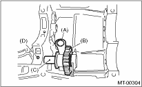

1. Install the reverse shifter lever, reverse idler gear and reverse idler gear shaft, and secure them with the straight pin.
NOTE:
Be sure to install the reverse idler shaft from rear side.

|
(A) |
Reverse shifter lever |
|
(B) |
Reverse idler gear |
|
(C) |
Reverse idler gear shaft |
|
(D) |
Straight pin |
2. Check and adjust clearance between the reverse idler gear and the transmission case wall surface. 
3. Install the shifter forks and rods.
4. Install the differential assembly.
5. Install the main shaft assembly.
Single-range model
Dual range model
6. Install the drive pinion shaft assembly.
7. Install the transmission case.
8. Install the transfer case together with the extension case assembly.
9. Install the back-up light switch & neutral position switch.
10. Install the manual transmission assembly to the vehicle.